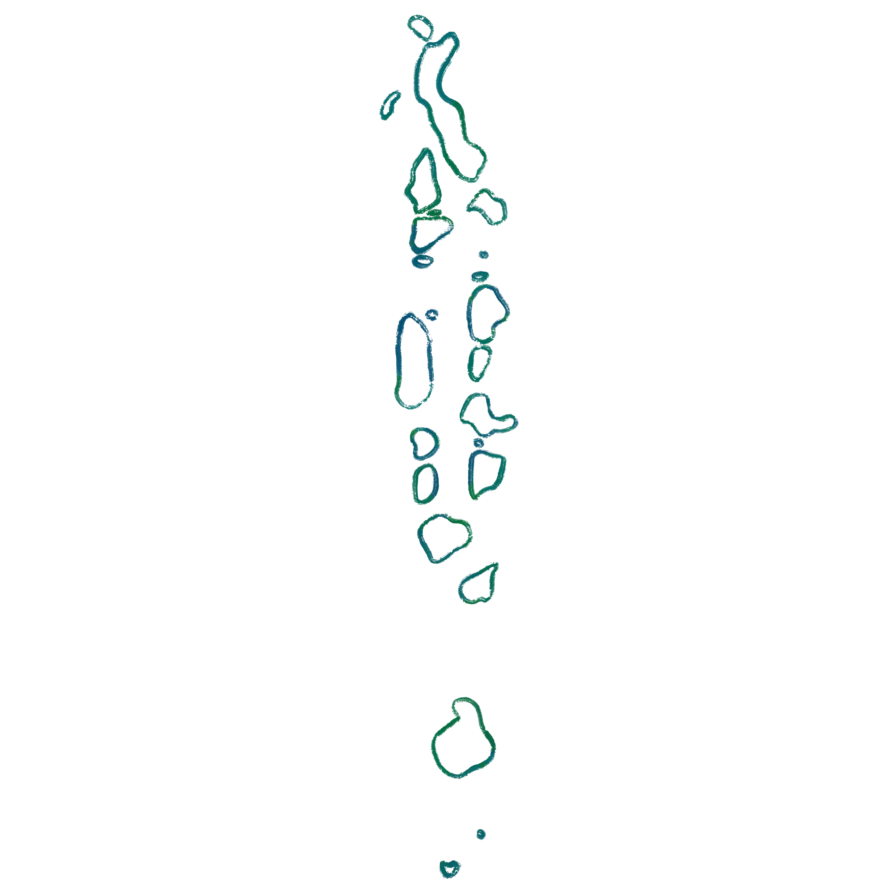

Choose your kind of island
Local islands offer a window into everyday Maldivian life and can be a practical base for excursions. Resorts operate on their own islands, while liveaboards move between dive sites and atolls.
A practical guide to the islands
A country of coral atolls, inhabited islands, reef life and open ocean. Use this guide to plan when to come, what to do, how to get around, and what to know before you go.
Start planning
First, the basics
The Maldives is an Indian Ocean archipelago made up of low-lying coral islands grouped into atolls. Your experience depends greatly on where you stay: a resort, a local inhabited island, a surf-focused trip, or a liveaboard can each offer a different way to experience the ocean and local life.
Local islands offer a window into everyday Maldivian life and can be a practical base for excursions. Resorts operate on their own islands, while liveaboards move between dive sites and atolls.
Depending on your destination, transfers may involve a domestic flight, seaplane, or speedboat. Services can have limited schedules and weather-related changes, so coordinate arrival times with your accommodation or operator.
On inhabited local islands, dress modestly away from designated tourist beach areas. Alcohol is generally restricted outside licensed resort environments, and local rules apply to public behaviour and protected marine life.
Weather and seasons
The Maldives is warm throughout the year, usually around 28–32°C. Instead of four temperate seasons, the climate is shaped by two monsoons. These are useful planning guides, not guarantees: conditions vary by atoll, and rain often arrives as showers rather than lasting all day.
The northeast monsoon usually brings sunnier conditions and less rainfall. A strong all-round choice for beach time, boat trips and visitors prioritising more settled weather. It is also a popular period, so book early around holidays.
The southwest monsoon usually brings more rain and stronger winds. There can still be sunny spells. This season can suit surfers and travellers who are flexible about weather, boat schedules and sea conditions.
Conditions can be changeable as the monsoon shifts. These months may offer a balance of sunshine and flexibility, but do not assume calm seas or dry weather every day.
| Your priority | When to consider | Keep in mind |
|---|---|---|
| Sunshine and beach time | January–March | Popular dates can cost more; weather is never guaranteed. |
| Surfing | Typically May–October | Swell and wind depend on the break; confirm local forecasts and operator schedules. |
| Diving and marine life | Year-round, depending on atoll and species | Visibility, currents and encounters vary with location and season. |
| More flexible trip planning | Shoulder periods may be worth comparing | Compare the specific atoll, activities, prices and transfer options for your dates. |
Choose dates around your main goal—surf, particular marine life, calmer boat rides or a beach-focused holiday—then check forecasts and local conditions close to departure.
Under the surface
The Maldives is known for coral reefs, reef fish, manta rays, whale sharks in some regions, and channel dives where currents can attract larger marine life. What you see depends on the atoll, season, site and conditions—not a guarantee of any encounter.
Visibility and marine-life patterns vary across the long chain of atolls. Ask operators which sites they expect to visit, what experience is required, and how they adapt plans to currents and weather.
Follow your guide, maintain buoyancy, avoid touching coral or marine animals, and never chase or block wildlife.
Explore dive safarisConfirm that scuba diving is covered for your certification and planned depth, and check exclusions for liveaboards, emergency evacuation, hyperbaric treatment, trip interruption and pre-existing conditions. Ordinary travel insurance may not cover every diving incident.
Wind, swell and reef breaks
The main surf season is generally during the southwest monsoon, roughly May to October, when southern Indian Ocean swells become more consistent. Many well-known breaks are reef passes, so conditions and suitability vary with swell size, tide and wind.
Some breaks are better suited to confident surfers. If you are new to reef breaks, arrange local guidance, understand entry and exit routes, and choose conditions within your ability.
A promising swell forecast does not guarantee clean waves. Break orientation, wind direction, tide and local weather can change conditions quickly. Check with a local surf operator before committing.
Boat transfers and surf schedules can change with sea conditions. Leave room in your itinerary and ensure your insurance specifically covers surfing and any relevant rescue or medical costs.
Choose your surf region and accommodation together. Access to breaks, transfer time, boat arrangements and the level of support can matter as much as the room itself.
Catch someBeyond diving and surfing
Plan a mix of time on the water and time on land. Availability depends on the island, operator, weather and season, so confirm details before booking.
Explore house reefs or join a guided boat trip. Use a life jacket if needed, watch currents, and keep fins and hands away from coral.
Walk through island communities, try local food, visit cafés and learn about everyday Maldivian culture with respect for residents and local customs.
Boat excursions may include sandbanks, sunset trips, fishing or uninhabited islands. Confirm weather limits, inclusions, safety equipment and return timing.
Manta rays, dolphins, turtles and whale sharks may be seen in some areas. Encounters are never guaranteed; keep a respectful distance and follow guides.
Combine different islands where schedules allow. Plan transfers carefully and avoid tight connections between separate tickets or operators.
Leave room for beach time, sunrise walks, local meals and weather changes. A less crowded itinerary can make the trip more rewarding.
Practical travel advice
A little preparation can prevent expensive surprises, especially when your trip includes boats, remote islands, diving or surfing.
Look for emergency medical treatment and evacuation, repatriation, trip interruption and cancellation where appropriate. Declare relevant conditions and confirm all planned activities are covered.
Rules and declarations can change. Before departure, confirm current requirements with the official Maldives immigration or tourism authorities and check the rules for any transit country.
Currents, waves, reef edges and boat traffic can be hazardous. Follow local advice, use designated swimming areas, and do not enter the water when operators or authorities advise against it.
Use high-SPF sunscreen, shade, hydration and suitable clothing. Use insect repellent and check current health advice before travelling.
Dress modestly in public areas on inhabited islands; swimwear is generally for designated tourist beach areas or resort settings. Follow local rules on alcohol and public conduct.
Speedboats and domestic flights can be delayed or affected by weather. Confirm baggage limits, meeting points, operating hours and what happens if your international flight is late.
A simple pre-departure checklist
Use this as a starting point, then verify details against your nationality, itinerary and activities.
Travel information can change. This guide is for general planning only and is not a substitute for official entry advice, medical guidance, a professional dive briefing or the terms of your insurance policy.
Confirm seasonal weather guidance, entry rules and insurance advice with official sources shortly before you travel.
Explore Pearl Drift's local stays, dive safaris and special trips to find a starting point for your itinerary.